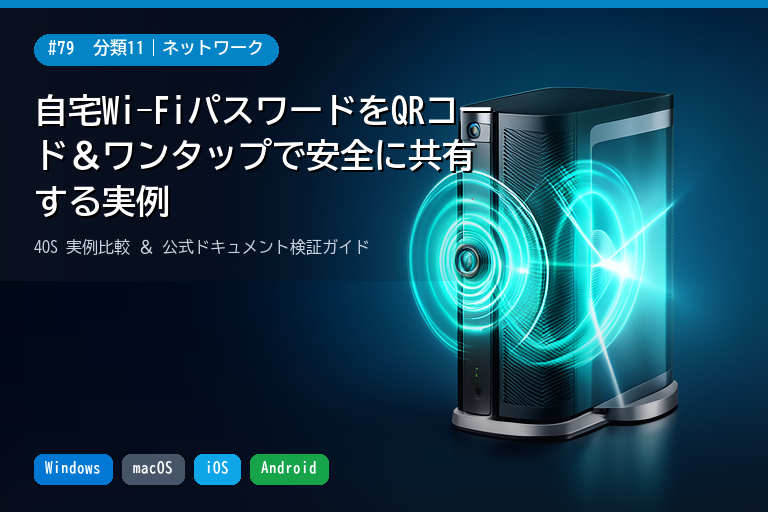
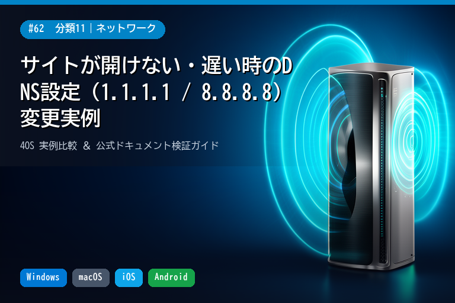
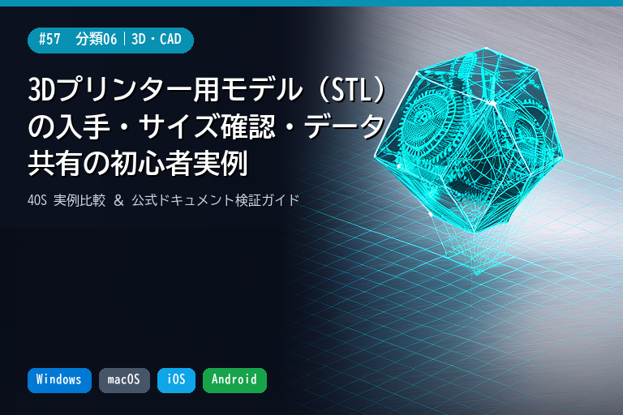
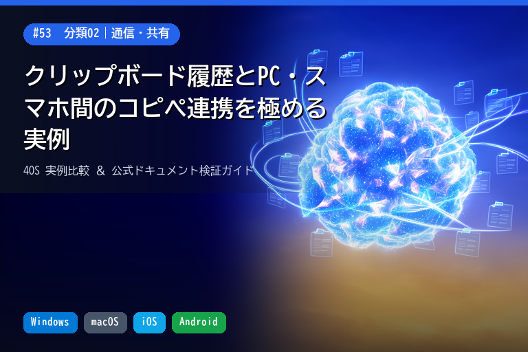
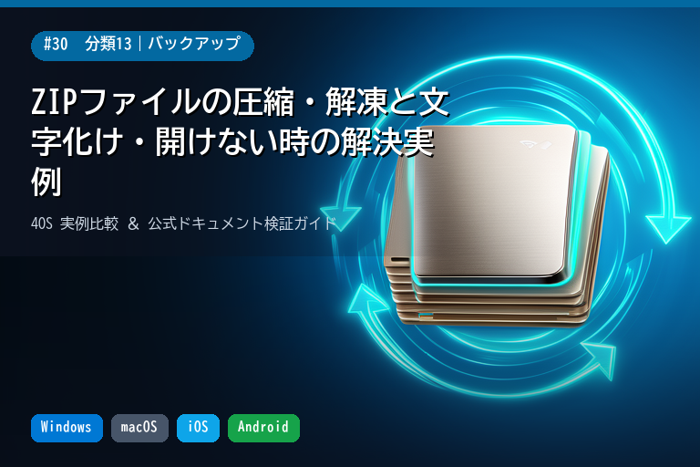
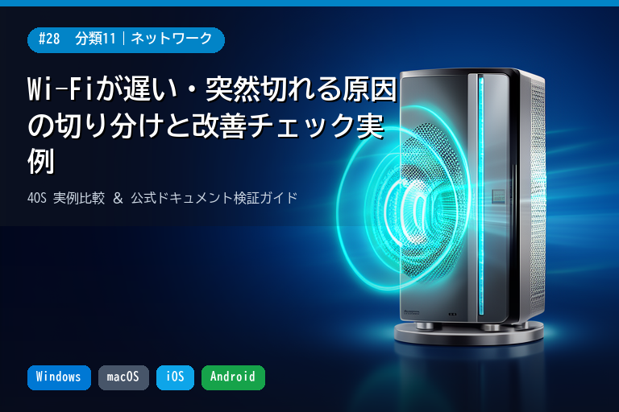
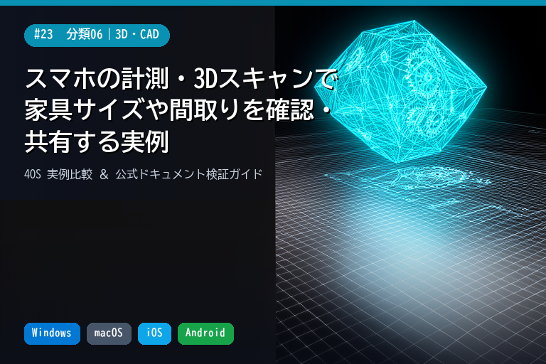

全 79 件の記事を表示中（最終更新: 2026-11-26 13:57 JST）

分類11: ネットワーク・サーバー・インフラ構築
自宅Wi-FiパスワードをQRコード＆ワンタップで安全に共有する実例｜Windows・macOS・iOS・Android
分類10: システム管理・OS設定・メンテナンス
目の疲れを軽減する「ダークモード＆夜間モード」自動切替設定の実例｜Windows・macOS・iOS・Android
分類09: データ分析・科学計算・AI活用
アンケート・出欠確認を無料フォームで作成＆自動グラフ集計する実例｜Windows・macOS・iOS・Android

分類08: Web制作・ブログ・デジタルマーケティング
よく使うWebサイトをホーム画面へアプリ化（PWA）して1タップ起動する実例｜Windows・macOS・iOS・Android

分類07: プログラミング・ソフトウェア開発
文章や名簿の表記ゆれを一括修正！「検索と置換」時短テクニック実例｜Windows・macOS・iOS・Android
分類06: 3D・CAD・ものづくり
家具・家電の購入前にARで部屋へ試し置き！サイズ確認とPC比較の実例｜Windows・macOS・iOS・Android

分類05: 動画・音声・音楽制作
通話や録音の雑音を抑える！OS 標準ノイズ抑制（声を分離）設定の実例｜Windows・macOS・iOS・Android
分類04: 画像・イラスト・デザイン制作
暗い写真・逆光写真をOS標準機能だけで自然に明るく補正する実例｜Windows・macOS・iOS・Android
分類03: 情報収集・リサーチ・Web利用
シークレットモード・プライベートブラウズで隠せること・隠せないことの実例ガイド｜Windows・macOS・iOS・Android

分類02: コミュニケーション・情報共有
メールに大容量ファイルが送れない時の共有リンク活用＆誤送信防止の実例｜Windows・macOS・iOS・Android
分類01: 文書作成・オフィス業務・事務作業
住所・定型文を一発変換！OS標準「ユーザー辞書登録」と時短活用の実例｜Windows・macOS・iOS・Android

分類17: 生活・行政手続き・家計・資産管理
もしもの災害・緊急時に備える「緊急SOS・メディカルID・オフライン地図」設定実例｜Windows・macOS・iOS・Android
分類16: 学習・教育・自己啓発
長文記事やPDFを耳で聴く！OS標準「読み上げ機能」の活用実例｜Windows・macOS・iOS・Android
分類15: エンターテインメント・趣味
旅行写真を画質劣化なしで家族共有！共有アルバム＆スライドショー活用実例｜Windows・macOS・iOS・Android
分類14: ハードウェア・周辺機器・IoT連携
USB-Cケーブル・ハブで充電や画面出力ができない原因と正しい選び方実例｜Windows・macOS・iOS・Android

分類13: ファイル管理・バックアップ・データ復旧
新しいPC・スマホ買い替え時の公式データ移行＆失敗しない事前チェック実例｜Windows・macOS・iOS・Android
分類12: セキュリティ・プライバシー対策
フィッシング詐欺・迷惑メール／SMSを見抜いてブロックする標準セキュリティ実例｜Windows・macOS・iOS・Android

分類11: ネットワーク・サーバー・インフラ構築
サイトが開けない・遅い時のDNS設定（1.1.1.1 / 8.8.8.8）変更実例｜Windows・macOS・iOS・Android
分類10: システム管理・OS設定・メンテナンス
PC・スマホの動作が重い・起動が遅い時のスタートアップ整理＆軽量化実例｜Windows・macOS・iOS・Android
分類09: データ分析・科学計算・AI活用
PDFの表や紙の明細をExcel・スプレッドシートへ取り込んで集計する実例｜Windows・macOS・iOS・Android

分類08: Web制作・ブログ・デジタルマーケティング
SNSシェア時にブログのアイキャッチ（OGP）が出ない・更新されない時の解決実例｜Windows・macOS・iOS・Android

分類07: プログラミング・ソフトウェア開発
2つの文章・原稿の違いを一瞬で見抜く「差分比較（Diff）」の実例｜Windows・macOS・iOS・Android

分類06: 3D・CAD・ものづくり
3Dプリンター用モデル（STL）の入手・サイズ確認・データ共有の初心者実例｜Windows・macOS・iOS・Android
分類05: 動画・音声・音楽制作
動画の自動字幕（ライブキャプション）表示＆字幕作成の実例｜Windows・macOS・iOS・Android
分類04: 画像・イラスト・デザイン制作
SNS投稿前の写真ぼかし・モザイク加工と位置情報（Exif）削除の実例｜Windows・macOS・iOS・Android

分類03: 情報収集・リサーチ・Web利用
ブラウザの自動入力（住所・クレカ・ID）を安全に管理・削除する実例｜Windows・macOS・iOS・Android

分類02: コミュニケーション・情報共有
クリップボード履歴とPC・スマホ間のコピペ連携を極める実例｜Windows・macOS・iOS・Android

分類01: 文書作成・オフィス業務・事務作業
キーボード不要！標準「音声入力」で文書・メールを高速作成する実例｜Windows・macOS・iOS・Android
分類17: 生活・行政手続き・家計・資産管理
マイナポータル・オンライン行政手続きの読み取りエラー対策と活用実例｜Windows・macOS・iOS・Android
分類16: 学習・教育・自己啓発
勉強・仕事に集中する「集中モード／通知制御」設定と着信逃し防止の実例｜Windows・macOS・iOS・Android
分類15: エンターテインメント・趣味
電子書籍・PDF読書の全端末同期とストレージ節約の管理実例｜Windows・macOS・iOS・Android
分類14: ハードウェア・周辺機器・IoT連携
Wi-Fiプリンターへのワイヤレス印刷設定と「オフライン」エラー解決実例｜Windows・macOS・iOS・Android

分類13: ファイル管理・バックアップ・データ復旧
誤削除した写真・書類をごみ箱やクラウド履歴から復元する緊急ガイド｜Windows・macOS・iOS・Android

分類12: セキュリティ・プライバシー対策
フリーWi-Fiを安全に使うプライバシー設定とログイン画面が出ない時の対処｜Windows・macOS・iOS・Android

分類11: ネットワーク・サーバー・インフラ構築
スマホのテザリング（インターネット共有）接続手順と繋がらない時の解決実例｜Windows・macOS・iOS・Android
分類10: システム管理・OS設定・メンテナンス
バッテリーの減りが早い原因特定と劣化を防ぐ充電設定の実例｜Windows・macOS・iOS・Android

分類09: データ分析・科学計算・AI活用
表計算ソフトでグラフ作成＆スマホでの確認・修正実例｜Windows・macOS・iOS・Android

分類08: Web制作・ブログ・デジタルマーケティング
仕事と私用を分けるブラウザ「プロファイル」管理と拡張機能トラブル対策｜Windows・macOS・iOS・Android

分類07: プログラミング・ソフトウェア開発
プログラミング不要で毎日を時短！標準自動化ツール活用の実例｜Windows・macOS・iOS・Android
分類06: 3D・CAD・ものづくり
模様替え・DIYの簡易図面＆手書きスケッチをPCとスマホで共有する実例｜Windows・macOS・iOS・Android

分類05: 動画・音声・音楽制作
音声ファイル（M4A/WAV/MP3）の変換と再生できない時の解決実例｜Windows・macOS・iOS・Android
分類04: 画像・イラスト・デザイン制作
写真の背景切り抜き・透過PNG作成を標準機能＆無料で行う実例｜Windows・macOS・iOS・Android
分類03: 情報収集・リサーチ・Web利用
増えすぎたタブ整理・リーディングリスト活用と全端末同期の実例｜Windows・macOS・iOS・Android
分類02: コミュニケーション・情報共有
Web会議（Zoom/Teams/Meet）でマイク・カメラが使えない時の解決実例｜Windows・macOS・iOS・Android

分類01: 文書作成・オフィス業務・事務作業
写真・スクショから文字をコピー（OCR文字認識）する標準機能の実例｜Windows・macOS・iOS・Android

分類17: 生活・行政手続き・家計・資産管理
カレンダー予定の家族共有・全端末同期と通知が来ない時の対処実例｜Windows・macOS・iOS・Android
分類16: 学習・教育・自己啓発
Web翻訳・カメラ翻訳・音声翻訳の使い分けとオフライン翻訳の実例｜Windows・macOS・iOS・Android

分類15: エンターテインメント・趣味
動画・音楽のオフライン保存とダウンロードできない・容量圧迫の対策実例｜Windows・macOS・iOS・Android

分類14: ハードウェア・周辺機器・IoT連携
外部モニター・サブディスプレイ接続の設定と映らない・解像度ズレ対処｜Windows・macOS・iOS・Android

分類13: ファイル管理・バックアップ・データ復旧
ZIPファイルの圧縮・解凍と文字化け・開けない時の解決実例｜Windows・macOS・iOS・Android

分類12: セキュリティ・プライバシー対策
PC・スマホ紛失時の遠隔ロック・位置検索（探す機能）の設定実例｜Windows・macOS・iOS・Android

分類11: ネットワーク・サーバー・インフラ構築
Wi-Fiが遅い・突然切れる原因の切り分けと改善チェック実例｜Windows・macOS・iOS・Android

分類10: システム管理・OS設定・メンテナンス
OSアップデートが終わらない・失敗するときの安全な対処手順｜Windows・macOS・iOS・Android の比較ガイド

分類09: データ分析・科学計算・AI活用
生成AI（ChatGPT/Gemini）をPCとスマホで連携・履歴活用する実例｜Windows・macOS・iOS・Android

分類08: Web制作・ブログ・デジタルマーケティング
QRコード作成・読み取りとPC〜スマホ間のURL即時共有実例｜Windows・macOS・iOS・Android
分類07: プログラミング・ソフトウェア開発
初心者向けMarkdownメモの書き方と全端末同期・プレビュー実例｜Windows・macOS・iOS・Android

分類06: 3D・CAD・ものづくり
スマホの計測・3Dスキャンで家具サイズや間取りを確認・共有する実例｜Windows・macOS・iOS・Android

分類05: 動画・音声・音楽制作
ボイスメモ・会議録音の文字起こしと音声ファイル共有の実例｜Windows・macOS・iOS・Android

分類04: 画像・イラスト・デザイン制作
Instagram 投稿ワークフロー：PC デザインからスマホ投稿まで｜Windows・macOS・iOS・Android

分類03: 情報収集・リサーチ・Web 利用
クロスデバイス検索：ブラウザ間でのブックマークとメモ共有｜Windows・macOS・iOS・Android

分類02: コミュニケーション・情報共有
PC での PDF 注釈とスマホからの即時返答｜Windows・macOS・iOS・Android
分類01: 文書作成・オフィス業務・事務作業
複数 OS で同時編集：Google ドキュメント vs ローカルファイル｜Windows・macOS・iOS・Android

分類17: 生活・行政手続き・家計・資産管理
領収書スキャン・確定申告データの整理と安全な保存手順｜Windows・macOS・iOS・Android

分類16: 学習・教育・自己啓発
デジタル学習ノート・暗記カードの全端末同期とトラブル対策｜Windows・macOS・iOS・Android
分類15: エンターテインメント・趣味
画面ミラーリング・テレビ投影の実例と映らない・音ズレ対処｜Windows・macOS・iOS・Android

分類14: ハードウェア・周辺機器・IoT連携
Bluetooth機器のマルチペアリング設定と繋がらない時の解決法｜Windows・macOS・iOS・Android

分類13: ファイル管理・バックアップ・データ復旧
外付けSSDを4OSで共用するバックアップ手順と認識しない時の対処｜Windows・macOS・iOS・Android

分類12: セキュリティ・プライバシー対策
パスキー・パスワード管理＆2段階認証の安全な同期実例｜Windows・macOS・iOS・Android

分類11: ネットワーク・サーバー・インフラ構築
自宅LANの共有フォルダ・NAS（SMB）接続とエラー解決の実例｜Windows・macOS・iOS・Android
分類10: システム管理・OS設定・メンテナンス
ストレージ容量不足の原因特定と安全な空き容量確保の実例｜Windows・macOS・iOS・Android

分類09: データ分析・科学計算・AI活用
CSV文字化け（UTF-8/Shift_JIS）の確実な直し方と実例｜Windows・macOS・iOS・Android
分類08: Web制作・ブログ・デジタルマーケティング
Webサイトの表示確認・スーパーリロード＆キャッシュ削除の実例｜Windows・macOS・iOS・Android

分類07: プログラミング・ソフトウェア開発
初心者向けGitHub・コード閲覧とブラウザ開発環境の実例｜Windows・macOS・iOS・Android

分類06: 3D・CAD・ものづくり
3Dデータ（STL/OBJ/AR）の閲覧・確認の実例ガイド｜Windows・macOS・iOS・Android

分類05: 動画・音声・音楽制作
動画の圧縮・トリミング・MP4共有の実例と再生エラー対処｜Windows・macOS・iOS・Android

分類04: 画像・イラスト・デザイン制作
画像の一括リサイズ＆HEIC/WebP変換の実例ガイド｜Windows・macOS・iOS・Android

分類03: 情報収集・リサーチ・Web利用
スクリーンショット・画面録画の最短手順と保存先トラブル対処｜Windows・macOS・iOS・Android
分類02: コミュニケーション・情報共有
クラウドストレージ同期と共有トラブル解決の実例｜Windows・macOS・iOS・Android

分類01: 文書作成・オフィス業務・事務作業
PDFの結合・分割・圧縮を無料で行う実例ガイド｜Windows・macOS・iOS・Android
条件に一致する記事が見つかりませんでした。キーワードやジャンルを変更してお試しください。